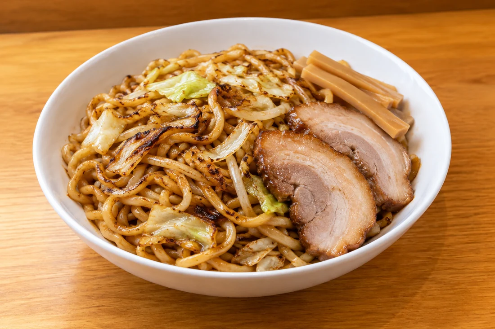
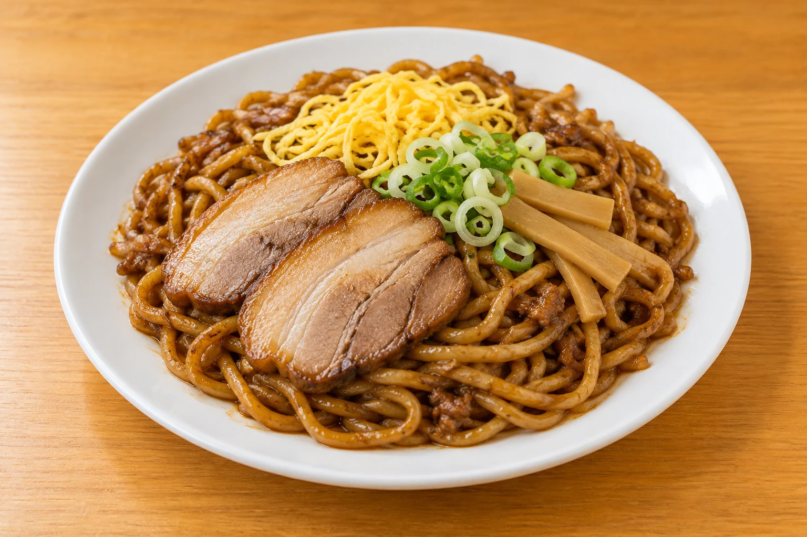
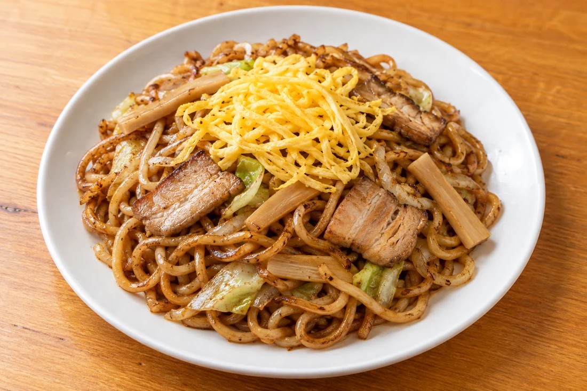
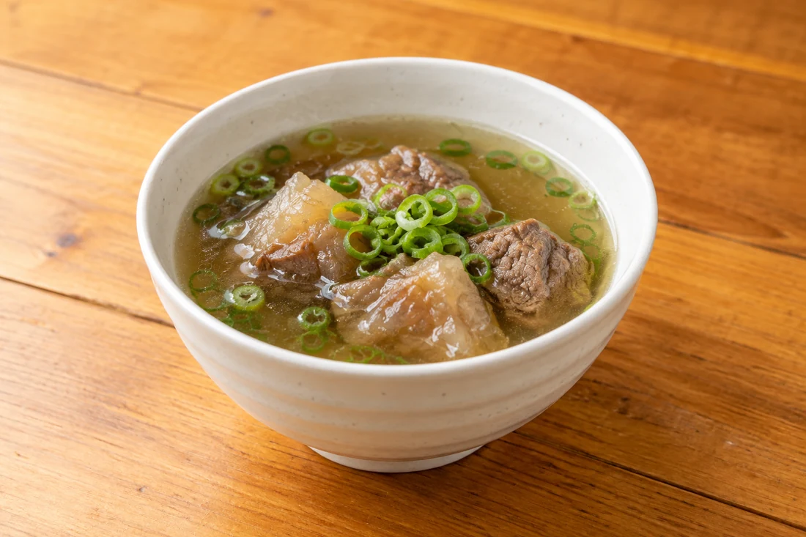

01
やきそば
太く、歯ごたえのある麺を鉄板で。だしをきかせたソースの香りと一緒に。

自家製太麺のやきそば。
よしのり屋の太麺
麺を楽しむ
焼き目のついた自家製麺に、
チャーシューやメンマなどを添えて。

太さと食感を楽しむ、やきそば。

牛すじのスープ。提供の有無は店頭でお確かめください。
具材・提供内容は変更になる場合があります。
ご利用の前に
営業時間やメニューの最新情報をご確認のうえ、
お越しください。
食物アレルギーやお苦手な食材は事前にお知らせください。対応の可否は店舗にご確認ください。
朝は油そば、11時からやきそば・焼まぜそばの案内があります。提供状況は店頭でご確認ください。
7時から朝の営業、11時から昼の営業をしています。曜日や麺の状況により終了時刻が異なる場合があります。最新のお知らせをご確認ください。
駐車場があります。場所・利用条件は現地の案内に従ってください。
サイズ・料金は店頭のおしながきでご確認ください。
ACCESS / 店舗案内
営業日・時間は変更になる場合があります。お出かけ前にご確認ください。
Google マップを開く地図から経路をご確認いただけます。
山形市桧町 / 自家製太麺